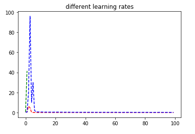
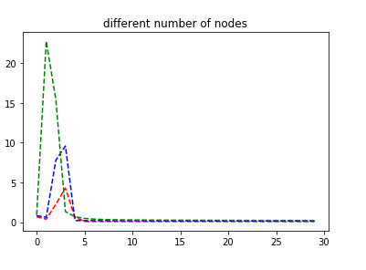

Problem Definition
In this assignment, we are trying to implement both a logistic regression classifier and a neural network classifier. We then train those two classes so that they can make informed decisions based on linear and nonlinear data inputs.
This is useful for image recognition and machine learning. You can take a neural network, train it using already classified inputs, and then use that trained neural network to recognize other images or make a decision based on its already given data.
The difficulty is in determining the learning rate or the number of hidden nodes in the hidden layer to put. There is a tradeoff between performance and accuracy. Another difficulty is that nonlinear is not as easy to classify since very complex data may need many hidden nodes that the class may not be able to compute efficiently.
Here are the learning objectives:
- Understand how neural networks work.
- Implement a logistic regression classifier, and a neural network classifier.
- Understand the role of different parameters of a neural network, such as learning rate.
- Learn how to evaluate a classifier using metrics like classification accuracy and confusion matrices.
Method and Implementation
We followed the skeleton code given to us, and the pseudocode that was provided on Piazza.
For logistic regression classifier, we take in a learning rate and the dimmensions for the input and output. We then compute the softmax scores given our input data, and find the average cost of the softmax scores to find the cost. The predict function then also computes softmax scores but makes a decision based upon which probability is highest. The predict function uses the compute cost function and backwards propogation to minimize cost and reassign weights until convergence is reached. Convergence is reached when the previous cost and current cost difference is minimal and any other further iterations will also be minimal.
For neural network classifier, we take in a learning rate (epsilon), input and output dimensions, and number of hidden nodes to use for the hidden layer. In the compute_cost function we used the sigmoid function to compute softmax scores. Instead of calculating the mean score, we calculate the average loss with respect to the weights. In the predict function we once again compute the softmax scores and make a decision based on the highest loss value as this will have more effect on weights and classification in other layers. The fit function we do forward propogation (computing softmax) and backward propogation. Backward propogation consists of computing the hidden layer weight values first (error or delta3) by computing desired_output - computed_output and applying it to our sigmoid prime function. We then compute the previous layer by applying the dot product of the error (delta3) and the weights and multiplying by sigmoid prime. Given the new values computed we reassign weights nd biases.
Experiments
The first experiment was switching between linear and non linear data for the Logistic Regression Classifier.In this first image we used linear data with 2 input dimensions, 2 output dimensions, and a learning rate of 0.01.

In the next image we used non-linear data with 2 input dimensions, 2 output dimensinos, and a learning rate of 0.01. As seen, logistic regression cannot accurately classify non-linear data as it is a linear classifier:

The next experiment was to change the number of nodes in the hidden layer for the Neural Network class. Here is the result of having 2 input dimensions, 2 output dimensions, learning rate of 0.01, and 2 nodes. The data is able to classify correctly, even better than the logistic regression.

Here is the result of having 10 nodes. We see that the classifier tends to still predict correctly based on linear data.

The next experiment was trying nonlinear data for the neutral network using 4 nodes. Given the 2 input dimension, 2 output dimension, and 0.01 learning rate the results for non-linear are as follows. We find that our classfication does not fit the model precisely as there is some error, but is still able to predict accurately nontheless.

Here are the results using nonlinear data with 10 nodes in the hidden layer with the same settings as before. We find that the more hidden nodes, the better the classification, however, the longer it takes to compute.

We experimented with training the Logistic Regression classifier to recognize digits. To run these tests we ran fit function on the training data and then ran predict on our test function. We then compared our predicted values to the actual values.
The confusion matrix and accuracy is shown below using 2 nodes:

Here are the results using the neural network with 10 nodes in the hidden layer. Again we find that the higher the number of nodes there are, the more accurate the system is at correctly classifying, but it does take longer to compute.
Results
Question 2: Can your logistic regression classifier learn non-linear decision boundaries? Why or why not?
No it cannot because the prediction function for a logistic regression classifier is linear. The equation used for forwards propogation and softmax have a linear output.
Question 3: Can your neural network model (with one hidden layer) learn non-linear decision boundaries? Why or why not?
Yes it can because the output from our model uses a nonlinear activation sigmoid function. As seen from our models in the experimentation pictures, neural networks are allowed to learn non-linear boundaries due to the non-linear nature used in our sigmoid.
Question 4: What effect does learning rate have on how your neural network is trained? Illustrate your answer by training your model using different learning rates. Provide plots illustrating the total cost of your model over time for different settings of the learning rate.
Too high of a learning rate will cause the accuracy of the neural network to decline. Ideally we want learning rates that are low to take bigger steps to the minimum. In the graph we notice that our trials show that lower learning rates took bigger jumps in minimizing cost as opposed to larger learning rates. In addition lower learning rates have a tendency to keep costs fairly low most of the time without fluctuation.
In the below graph, each line represents a different learning rate:
- red: a learning rate of 0.01
- blue: a learning rate of 0.1
- green: a learning rate of 0.2

Question 5: What effect does the number of nodes in the hidden layer have on how your neural network is trained? Illustrate your answer by training your model using different numbers of hidden layer nodes. Provide plots showing the decision boundaries learned by your model for different settings of the number of nodes in the hidden layer.
As we add more nodes to the hidden layer, the neural network becomes more accurate. This is shown in the image below:
As we saw in the images given in the experiments section we find that the more nodes in the hidden layer, the more accurate our system is. The system is able to easily distinguish between red and blue sections. In the below graph, each line represents a different amount of nodes in the hidden layer. The X axis is cost and Y is time.
- red: 5 nodes in the hidden layer
- blue: 20 nodes in the hidden layer
- green: 40 nodes in the hidden layer

Discussion
We are fairly satisfied with the accuracy of our neural network, as for our neural networks accuracy for digits we were able to achieve excellent accuracy.
Conclusions
We have determined that Logistic Regression is good on linear data but not linear data. Neural Networks seem to work better for both linear and non-linear data overall and have a superior accuracy.
Credits and Bibliography
Sources used:
- http://www.wildml.com/2015/09/implementing-a-neural-network-from-scratch/
- http://www.kdnuggets.com/2016/10/beginners-guide-neural-networks-python-scikit-learn.html